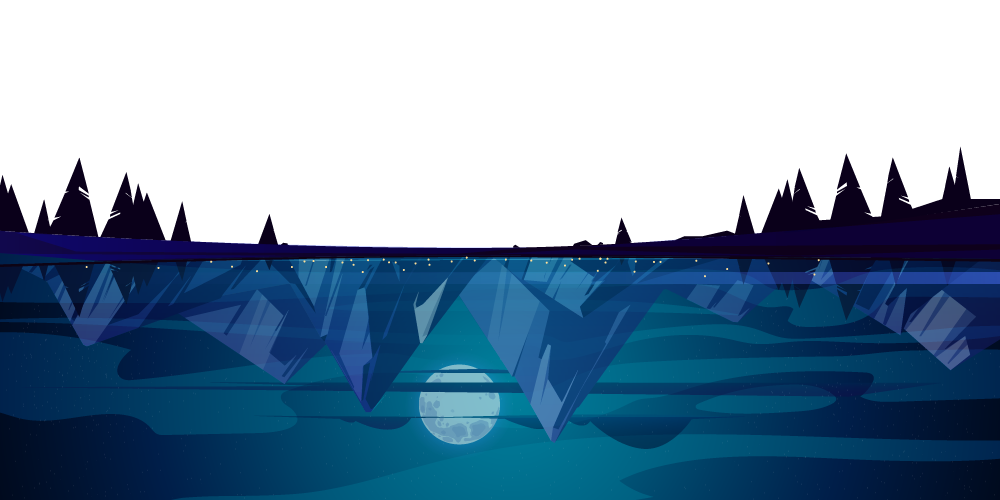
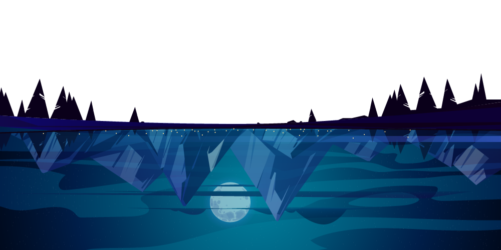

Ich habe mehrere Ideen, was das Lehrprojekt angeht. Einerseits könnte ich mir vorstellen, einen Workshop an
Schulen zu geben. Dabei wird das Thema Nachhaltigkeit genauer betrachtet und es werden Aufgaben gelöst.
Andererseits könnte ich mir auch vorstellen ein Buch zu machen zum Thema Nachhaltigkeit und dabei Tips
reinzuschreiben, zum Beispiel wie man besser auf Plastik verzichtet etc.